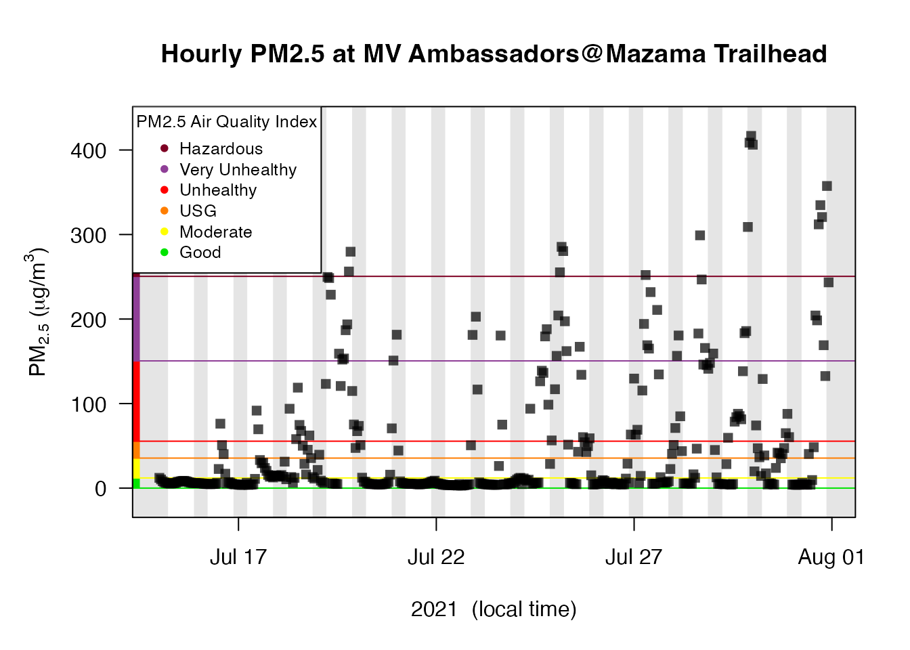
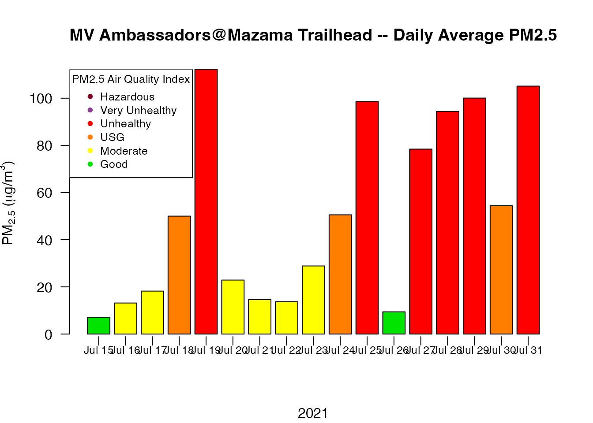
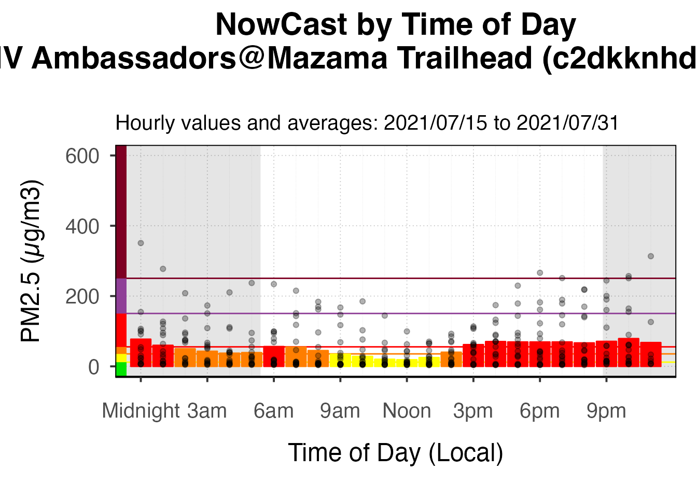

vignettes/articles/MVCAA_Tutorial_1.Rmd
MVCAA_Tutorial_1.RmdThis tutorial demonstrates how to create pas, pat and monitor objects for PurpleAir sensors in a particular community. Target audiences include grad students, researchers, air quality professionals and any member of the public concerned about air quality and comfortable working with R and RStudio.
Our goal in this tutorial is to create pas, pat and monitor objects (data structures) for the Methow Valley – a community in north-central Washington state. Clean Air Methow operates as a project of the Methow Valley Citizens Council and began deploying Purple Air Sensors in 2018:
In the summer of 2018, Clean Air Methow launched the Clean Air Ambassador Program, an exciting citizen science project, and one of the largest, rural networks of low-cost sensors in the world!
This tutorial will demonstrate how to access and work with data from this collection of sensors.
pas objects in the AirSensor package
contain per-instrument metadata for a collection of PurpleAir sensors.
This will include both “spatial metadata” like longitude, latitude,
timezone, etc. as well as each instrument’s
sensor_index, allowing us to request timeseries data from
the PurpleAir API.
pat objects in the AirSensor package contain time-invariant spatial metadata for a single sensor as well as the time-dependent measurements made by that sensor.
monitor objects in the AirMonitor package contain time-invariant spatial metadata for multiple sensors as well as the time-dependent PM2.5 measurements made by those sensors.
To find the sensors we wish to investigate, we must first create a pas object with metadata for all PurpleAir senors in our target area. The Methow Valley valley is located entirely within Okanogan County, WA, so we can create an Okanogan-only pas object as our starting point.
# AirSensor2 package
library(AirSensor2)## Loading required package: MazamaCoreUtils## /Users/jonathancallahan/Projects/MazamaScience/AirSensor2/vignettes/articles
# Set user's PurpleAir_API_READ_KEY
source('global_vars.R')
setAPIKey("PurpleAir-read", PurpleAir_API_READ_KEY)
# Initialize spatial datasets
initializeMazamaSpatialUtils()
# Create a new 'pas' object for Okanogan county
okanogan_pas <-
pas_createNew(
countryCodes = "US",
stateCodes = "WA",
counties = c("Okanogan"),
lookbackDays = 365, # all sensors from the past year
location_type = 0 # outdoor sensors only
)
# Interactive map
okanogan_pas %>% pas_leaflet()Clicking on some of the sensors in the Methow Valley, it quickly becomes apparent that many of those sensors have a label that associates them with the “Clean Air Ambassador” program. Unfortunately, the naming is not consistent.
A quick review of sort(pas$locationName) reveals:
Clearly, some effort was made to systematize the naming even if it wasn’t entirely successful. Nevertheless, we can filter for all location names that begin with “MV” or “Clean Air” to create a MVCAA-only pas object
mvcaa_pas <-
okanogan_pas %>%
pas_filter(stringr::str_detect(locationName, "^MV|^Clean Air"))
# Interactive map
mvcaa_pas %>% pas_leaflet()A pat object contains time series data for a specific
sensor. The pat_createNew() function downloads all data
records for a sensor – “raw data” typically measured every 2 minutes. A
similar function, pat_createHourly(), downloads hourly
aggregated data as provided by the PurpleAir API.
The pat_createNew() function has a fields
argument that lets you specify which data fields should be included in
the result. But default, it uses all those defined in
PurpleAir_HISTORY_PM25_FIELDS:
## [1] "rssi" "uptime" "pa_latency" "memory" "humidity"
## [6] "temperature" "pressure" "pm2.5_alt" "pm2.5_alt_a" "pm2.5_alt_b"
## [11] "pm2.5_atm" "pm2.5_atm_a" "pm2.5_atm_b" "pm2.5_cf_1" "pm2.5_cf_1_a"
## [16] "pm2.5_cf_1_b"Clicking on the leaflet map above, we identify the
sensor_index for the “Winthrop Library” sensor as
"13681". The following chunk of code creates a raw
pat object for this sensor:
# Create raw pat object
pat <-
pat_createNew(
api_key = PurpleAir_API_READ_KEY,
pas = mvcaa_pas,
sensor_index = "13681",
startdate = "2023-07-16",
enddate = "2023-07-18",
timezone = "UTC",
verbose = TRUE
)
# Pull out data
tbl <- pat$data
# Review parameters
names(tbl)## [1] "datetime" "rssi" "uptime" "pa_latency" "memory"
## [6] "humidity" "temperature" "pressure" "pm2.5_alt" "pm2.5_alt_a"
## [11] "pm2.5_alt_b" "pm2.5_atm" "pm2.5_atm_a" "pm2.5_atm_b" "pm2.5_cf_1"
## [16] "pm2.5_cf_1_a" "pm2.5_cf_1_b"We can now use the standard behavior of the base plot()
function to review all parameters and look for any interesting
correlations among them.
In the plots below, we see that temperature and
humidity (aka “relative humidity”) are inversely
correlated, that pm2.5_atm_a and pm2.5_atm_b
are strongly correlated and that variables pm2.5_atm and
pm2.5_cf are essentially identical.
For use cases involving comparison with regulatory monitors, calculating daily averages or informing the public, it is imperative to use hourly aggregated data that has had a correction equation applied. (PurpleAir sensors tend to report pm2.5 values that are higher than those reported by EPA regulatory monitors.)
The PurpleAir_createMonitor() function works similarly
to pat_createHourly() but only downloads those parameters
typically used in QC and correction functions. A
correction_FUN is applied to the hourly pat object
and returns corrected PM2.5 values. By default, an EPA vetted correction
function is applied that brings PurpleAir values in line with EPA data
even in the smoky conditions seen with wildfire smoke. (See the
documentation for PurpleAir_correction() for details.)
PurpleAir_createMonitor() returns a monitor
object ready to use with the AirMonitor and AirMonitorPlots
packages.
Below, we create a monitor object for a period in August, 2021 when wildfire smoke severely impacted the Methow Valley.
NOTE: Many sensors will not have data going back multiple years.
# "Mazama Trailhead" during the Cedar Creek and Cub Creek fires of 2021
monitor <-
PurpleAir_createNewMonitor(
api_key = PurpleAir_API_READ_KEY,
pas = mvcaa_pas,
sensor_index = "95227", # Mazama Trailhead
startdate = "2021-07-15",
enddate = "2021-08-01",
timezone = "America/Los_Angeles", # timestamps interpreted in this time zone
verbose = TRUE
)
# Check to see that we have data
dim(monitor$data)## [1] 399 2We can now use functions from the AirMonitor and AirMonitorPlots packages to manipulate and visualize this data.
NOTE: Values are in units of µg/m³ not AQI.
# Create a basic timeseries plot
AirMonitor::monitor_timeseriesPlot(
monitor,
shadedNight = TRUE,
addAQI = TRUE
)
AirMonitor::addAQILegend("topleft", cex = 0.8, bg = "white")
# Create a daily barplot
AirMonitor::monitor_dailyBarplot(
monitor,
)
AirMonitor::addAQILegend("topleft", cex = 0.8, bg = "white")
# Extract regulatory daily averages using "Local Standard Time"
monitor %>%
AirMonitor::monitor_dailyStatistic(
FUN = mean,
minHours = 18,
dayBoundary = "LST"
) %>%
AirMonitor::monitor_getData()## # A tibble: 18 × 2
## datetime c2dkknhd26_pa.95227
## <dttm> <dbl>
## 1 2021-07-14 00:00:00 NA
## 2 2021-07-15 00:00:00 6.85
## 3 2021-07-16 00:00:00 13.1
## 4 2021-07-17 00:00:00 18.6
## 5 2021-07-18 00:00:00 50.3
## 6 2021-07-19 00:00:00 114.
## 7 2021-07-20 00:00:00 27.9
## 8 2021-07-21 00:00:00 7.34
## 9 2021-07-22 00:00:00 22.3
## 10 2021-07-23 00:00:00 20.8
## 11 2021-07-24 00:00:00 55.3
## 12 2021-07-25 00:00:00 93.9
## 13 2021-07-26 00:00:00 14.9
## 14 2021-07-27 00:00:00 75.1
## 15 2021-07-28 00:00:00 99.1
## 16 2021-07-29 00:00:00 110.
## 17 2021-07-30 00:00:00 36.9
## 18 2021-07-31 00:00:00 110.
# Use AirMonitorPlots to create a "diurnal" plot
monitor %>%
AirMonitorPlots::monitor_ggDailyByHour_archival()
Best of luck assessing air quality in your community!